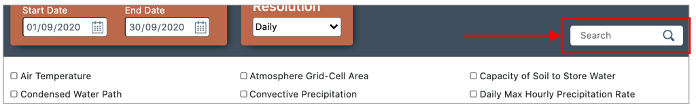

This section will introduce you to the fundamentals of how to use the application as a whole. Including the interactive actions you need to take within the User Interface.
-
Variables area
There are hundreds of the variables in the variable list, each variable presents a kind of climate data.
You can click the cycle which following the variable name to select the variables for your data set.

-
Variable filter
The variable filter can quick filter the variables which you wanted.
Entre the first few letters of the variable name in the filter text box,
the variable list will show the variables which name match your typing in the filter box.

-
Time area
Select a specific time period for your data.
For example, you can select 20/05/1999 for the start date and select 10/06/2000 in the end of date.
The selection means the data includes variable information between 20th May 1999 to 10th June 2000.
If you want to get just one day climate data, you can select the same day which you wanted for both start date and end date.

-
Time Resolution
Time resolution is where the climate futures data is collected by real world stations,
and they may record data every hour, every day, every month etc. It helps filter those data according to your needs.
You can select any this of the option, but when you get the data it actually retrieves data of all time resolutions and sorts it in the pop up download box.